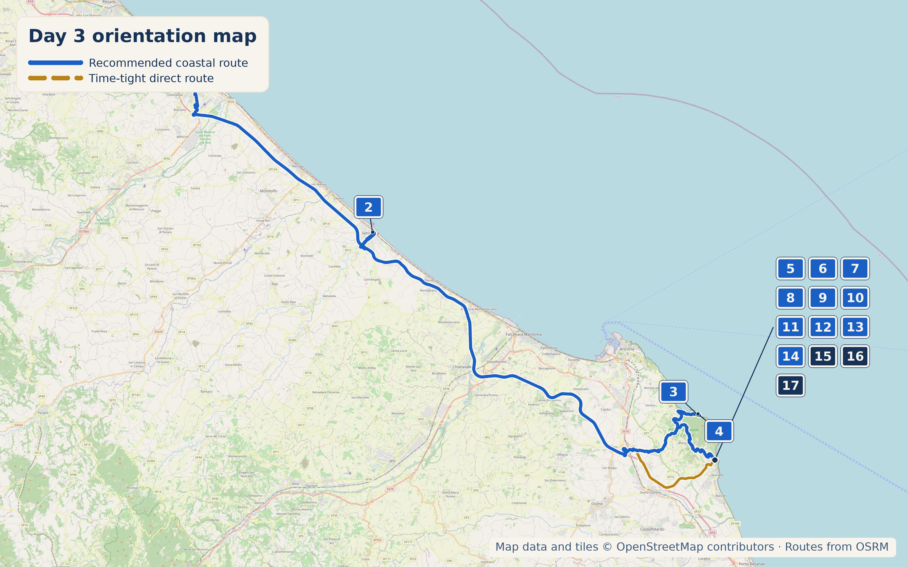

Overview
15 September 2026 is a Tuesday. Gelateria del Conero closed Mondays (not relevant); Diecidodici restaurant closed Mondays (not relevant); Abbazia di Portonovo only opens Thursday/Saturday 5–7pm (relevant, see note).
Stops
- Why stop: A well-preserved 15th-century defensive fortress by the train station, elaborately restored interior, views over the old town.
- Time required: 45–60 min
- Approx cost: €5 entry
- Hours: 8:30am–7:30pm daily

- Why stop: An 11th-century Romanesque abbey church right on the beach, rare architecture — reviewers note only Corsica and Normandy have comparable examples of this style.
- Time required: 30–60 min, or longer for a swim
- Hours — important: Only open Thursday and Saturday, 5:00–7:00pm. Outside those times you'll see it from outside only — still worth the stop for the setting.

- Why stop: Monte Conero is the rare spot on this coast where a mountain drops straight into the Adriatic. Sirolo is a restored medieval hill town with Piazza Vittorio Veneto (locally "La Piazzetta"), also known as the Balcone Panoramico, looking straight down onto the Riviera del Conero.
- Time required: Full day, ideally with an overnight
- Parking: Paid lots near Spiaggia Urbani fill fast in season
Coffee
Lunch
4.3★/1,201 reviews. Moscioli specialist, 30+ years, award-winning seafood risotto.
4.4★/1,062 reviews. Right on the beach.
4.5★/1,393 reviews. Historic since 1962.
4.6★/249 reviews, but recent reviews trending down (rising prices).
Local Speciality
Moscioli — wild mussels hand-harvested by free-diving fishermen from the Cooperativa Pescatori di Portonovo, only between Portonovo and Sirolo, only May–September. A Slow Food Presidio product since 2004.

What to Buy
4.5★/347 reviews. Local products, tagliere boards, Rosso Conero wine.
Hidden Gem
Called "the most historic shop in Sirolo" by a local food writer — small traditional alimentari/dairy shop.
Cool, Interesting & Quirky
The real, named cooperative behind the moscioli tradition. Named fishermen (Massimo Manganelli, Massimiliano Stecconi, Sandro Rocchetti) free-dive to harvest by hand using a moscioliniera tool. Buy directly at their Portonovo beach capanni or sales points in Numana/Osimo.
Accommodation
50m from centre, private parking. My pick — best value-to-character ratio, private parking solves Sirolo's worst practical problem.
Today's Route & Timing
Organic Maps route legs (POIs remain visible)
Import Day 6 POIs once, then open each leg in order. The Google buttons above retain the complete route as a fallback.
Recommended Route:
Useful stop maps: Rocca Roveresca Google Portonovo abbey Google Spiaggia Urbani Google
Print timing summary: suggested 9:00am departure. Base direct day is approximately 5h50–6h50, finishing around 2:50–3:50pm. The recommended coastal route via Senigallia and Portonovo adds about 1h45–2h15. A longer Portonovo swim adds 30–45 minutes; Cooperativa Pescatori adds 30–45 minutes; Da Giustina lunch adds 45–60 minutes. Under 8 hours is comfortable, 8–10 hours is long, and over 10 hours is a very long day.
Day 6 route map

Numbered points of interest
- Palazzo Rotati, Fano StartVia Nolfi 49, 61032 Fano PU, Italy
GPS: 43.8442214, 13.0192360 - Rocca Roveresca Historic sitePiazza del Duca 2, 60019 Senigallia AN, Italy
GPS: 43.7153671, 13.2205412 - Abbazia di Santa Maria di Portonovo Historic site / beach stopStrada Frazione Poggio, Portonovo, 60129 Ancona AN, Italy
GPS: 43.5611908, 13.5999370 - Cooperativa Pescatori di Portonovo Producer / food heritagePortonovo beach capanni, Strada Frazione Poggio, 60129 Ancona AN, Italy
GPS: 43.5619, 13.6002 - Centro Visite Parco del Conero Visitor office / orientationVia Peschiera 30/A, 60020 Sirolo AN, Italy
GPS: 43.5196861, 13.6180996 - Piazza Vittorio Veneto / Balcone Panoramico Viewpoint / historic centrePiazza Vittorio Veneto, 60020 Sirolo AN, Italy
GPS: 43.5230728, 13.6199227 - Spiaggia Urbani BeachSpiaggia Urbani, 60020 Sirolo AN, Italy
GPS: 43.5236323, 13.6231578 - Bar Gelateria del Conero Food stopVia Italia 1, 60020 Sirolo AN, Italy
GPS: 43.5225245, 13.6201607 - Da Giustina Food stopVia Cave 1, 60020 Sirolo AN, Italy
GPS: 43.5281358, 13.6135596 - La Paranza Food stopSpiaggia Urbani, 60020 Sirolo AN, Italy
GPS: 43.5226248, 13.6236777 - Osteria Sara Food stopPiazza Vittorio Veneto 9, 60020 Sirolo AN, Italy
GPS: 43.52285, 13.6196845 - Pa' Panino un bel Po' Food stopVia Italia 39, 60020 Sirolo AN, Italy
GPS: 43.5219441, 13.6204501 - Bottega dei Sapori Nostrani Shop / food stopVia Italia 11/36, 60020 Sirolo AN, Italy
GPS: 43.5223274, 13.6202173 - Latteria Elgide ShopVia Italia 5, 60020 Sirolo AN, Italy
GPS: 43.52243, 13.62012 - Conero Camere AccommodationVia Grilli 14, 60020 Sirolo AN, Italy
GPS: 43.5229034, 13.6186971 - Diecidodici Accommodation / food stopVia Anacleto Giulietti 10, 60020 Sirolo AN, Italy
GPS: 43.5235067, 13.6193663 - San Michele Relais & Spa AccommodationVia Piave 6, 60020 Sirolo AN, Italy
GPS: 43.5266418, 13.6169719
OpenStreetMap-derived orientation map only, not turn-by-turn navigation. Import this day’s POIs once to keep its bookmark pins visible in Organic Maps navigation. Use the Organic Maps route legs above for POI-visible navigation; Google Maps remains the complete-route fallback.
If Time Is Tight
Skip Senigallia and Portonovo entirely. Go straight to Sirolo, walk the centro storico, swim at Spiaggia Urbani.
If You've Got Half a Day
Add the Rocca Roveresca in Senigallia on the way through, and the Portonovo abbey (exterior) before Sirolo.
Skip It
🏆 Today's Winners
Road Trip Score
| Category | Rating |
|---|---|
| Food | ★★★★☆ |
| Coffee | ★★☆☆☆ |
| Atmosphere | ★★★★★ |
| Photography | ★★★★★ |
| History | ★★★☆☆ |
| Young Traveller Appeal | ★★★★★ |
| Worth Detour | ★★★★★ |